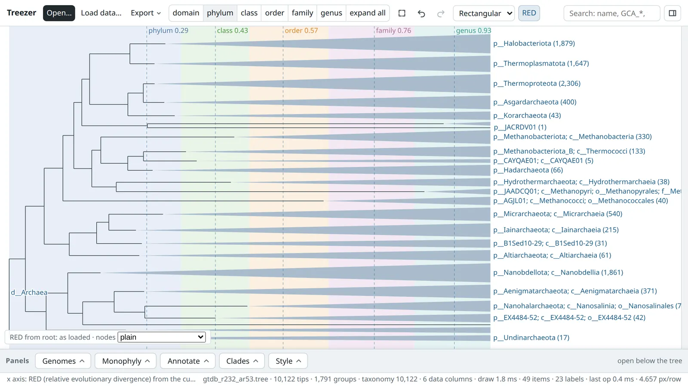
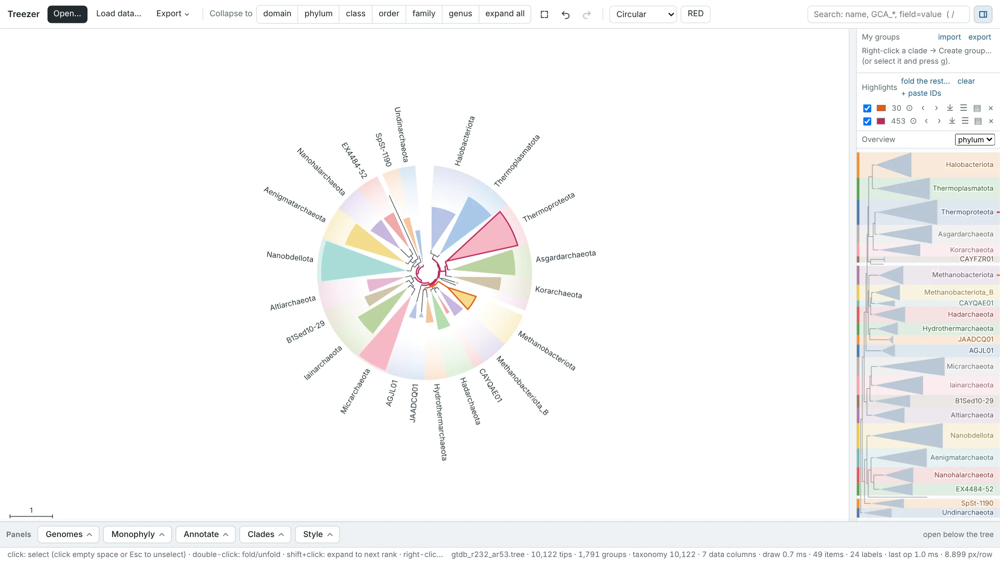
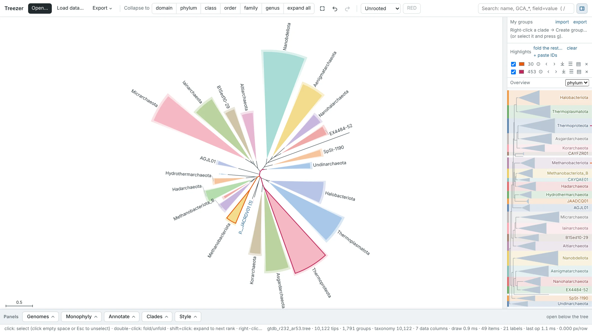
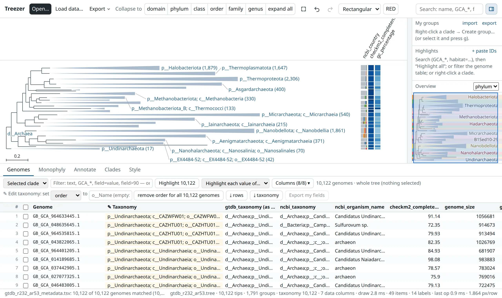

Fold clades by taxonomy, explore lineages and highlight genomes, all in a lightweight viewer that runs in
your browser. From small species trees to genome phylogenies with over 100,000 tips.
All you need is one HTML file: download it, double-click it, and Treezer opens in your web browser — even offline.
Version 0.2.0 · tested with GTDB r232



Fold the whole tree with the rank buttons, or open one clade and keep the rest folded. With RED on, dashed
lines mark each rank's median relative evolutionary divergence.
GTDB r232 Archaea, 10,122 species; Asgardarchaeota opened to order.
Switch layouts while keeping your highlights and annotations.
GTDB r232 Archaea, 10,122 species, folded to phylum. Highlighted:Methanobrevibacter andNitrosopumilaceae.
Portability
One HTML file
Treezer itself is a single file of about 2.5 MB. It runs offline in any browser: no installation, account or server, and your files are never uploaded.
Sharing
Share a tree with its data
Save your tree, its data and the current view as their own HTML file (Export ▾ → Shareable HTML file). It opens by double-click for collaborators, as supplementary material, or from an archive such as Zenodo.
Figures
Publication-ready figures
SVG, PNG and PDF at journal column widths, with legends; also re-rooted trees, tables and genome lists.
Scale
Large trees stay smooth
Pan, zoom and fold trees with over 100,000 tips; the full GTDB bacterial tree has 189,801.
Metadata
Explore by taxonomy and metadata
Search by name, accession or any column (completeness>=90), highlight and group the matches, and show data as tracks beside the tree.
Layouts
Rectangular, circular, unrooted
Switch at any time; folds, highlights and annotations carry over.
Taxonomy
Fold and unfold by rank
Collapse the tree to phylum, class, order… and open any clade further while the rest stays folded.
Monophyly
Compare tree and taxonomy
See which taxa the tree splits, how badly, and which genomes stray, for GTDB, NCBI or your own labels.
Curation
Edit the taxonomy
Correct or extend lineages in the genome table and export them in GTDB format.
Explore the Treezer interface
The top bar, the tree, the side panel and the panels below the tree.

12345678
Open, Load data, Export. Open a tree or a saved session, add tables about the genomes, and save sessions, figures or a shareable file.
Collapse to. Fold the whole tree to a rank; expand all opens it again. Double-click a clade to fold or open just that one.
Layout and RED. Rectangular, circular or unrooted; RED puts the tree on a relative-evolutionary-divergence scale.
Search. Names, accessions, taxa or column values (habitat=soil); Enter jumps, Shift+Enter highlights all matches.
The tree. Drag to pan, scroll to zoom, click to select, right-click a clade for its menu.
Tracks. Data shown beside the tree: colour strips, scales, heatmaps; folded clades summarise their genomes.
Side panel. Your groups, highlight sets and an overview of the whole tree; the icon at the top right shows or hides it.
Panels below the tree.Genomes (the table: filter, highlight, edit taxonomy), Monophyly, Annotate (tracks), Clades (shading and names) and Style.
Try an example
Real trees that open directly in Treezer, ready to explore. Every example uses Genome Taxonomy Database release 232 species representatives.
Getting started
Open a tree straight away, or start from your own files.
A Newick tree: IQ-TREE .treefile, FastTree, RAxML, GTDB-Tk de_novo_wf or GTDB trees
(.nwk, .tree, .tre, .txt). Support values and GTDB-style internal
labels such as '100.0:p__Bacillota' are understood. Trees with 100,000+ genomes are fine.
Load data…
A table about your genomes (TSV or CSV, optionally .gz). One column must hold the names used as tips in
the tree; Treezer finds it (e.g. genome, accession, user_genome) and shows how
many genomes matched. Accessions match with or without the GTDB RS_/GB_ prefix and version,
and assembly file names such as GCA_000005845.2_ASM584v2_genomic match too. Pick the columns you want and,
if the table has one, the column to use as taxonomy (Taxonomy from).
bac120_taxonomy_r232.tsv (accession + lineage) — becomes the taxonomy.
GTDB-Tk summary
gtdbtk.bac120.summary.tsv — its classification becomes the taxonomy; closest reference, ANI and RED go to the table.
GTDB metadata
bac120_metadata_r232.tsv.gz (300 MB) — streamed; choose the columns.
Your own metadata
Any columns: habitat, quality, traits… Use them in searches (habitat=soil, completeness>=90), in the genome table and as trait strips.
Feature tables
Genome + feature (e.g. KEGG KOs from DRAM), or features × genomes — for presence / absence strips.
iTOL annotation files
Colour strips (kept in their colours), clade colours and ranges, text labels and collapse lists; tipA|tipB references work as in iTOL.
Empty ranks such as o__;f__ are fine: those genomes are simply unassigned at that rank.
Fold, search, annotate
The rank buttons fold the tree by taxonomy; right-click any clade for more. Your own groups and edited fields are kept
in this browser. In the genomes table you can correct or extend the taxonomy: double-click a Taxonomy cell to
edit one lineage, or set one rank (e.g. o__MyOrder) for every listed genome, then download it with
⤓ taxonomy (GTDB format). Everything can be undone with ⌘Z / Ctrl+Z.
Compare your tree with a taxonomy
The monophyly tab lists the taxa your tree splits, how badly (piece sizes, genomes outside the main piece,
support of the separating branches), and highlights the stray genomes. Root the tree first — the tab warns if it looks
unrooted and can root it on an outgroup taxon for you. With several taxonomy columns loaded (e.g. GTDB and NCBI),
switch between them with compare with.
Save your work
Export ▾ → Save session writes one .treezer session file with tree, data, groups, highlights and folds;
reopen it with Open…. Export ▾ → Shareable HTML file saves the same as an HTML file that anyone can open by
double-click, without Treezer. Or export a figure (SVG, PNG, PDF), the re-rooted tree or tables.
Click
Select
Double-click
Fold / unfold
Shift + click
Expand to the next rank
Alt / Option + click
Distance to the selection
Right-click
Menu: expand to rank, groups, root, export…
Drag · Wheel
Pan · zoom (Shift + wheel: zoom width)
Keys
f fit · / search · g group · ⌘Z / Ctrl+Z undo
Things to try — a five-minute tour
Open Archaea with trait strips. Right-click a phylum → Expand to order; the rest stays folded.
Press /, type g__Methanobrevibacter and press Enter to jump there.
Search checkm2_completeness>=95 and press Shift+Enter to highlight the matches.
Press RED to see where each rank's median divergence falls.
Open NCBI vs GTDB taxonomy and click highlight next to a split taxon.
Feedback. Comments, problems or ideas? Please send them directly to the person who shared this link with you — what
you tried, what worked, what was confusing, and whether you would use it for your own work.